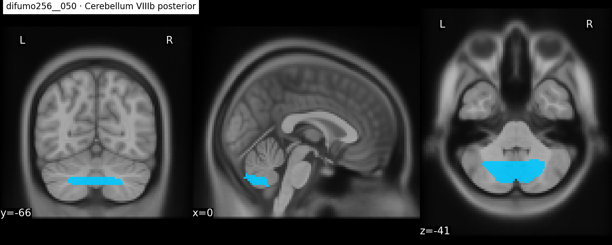
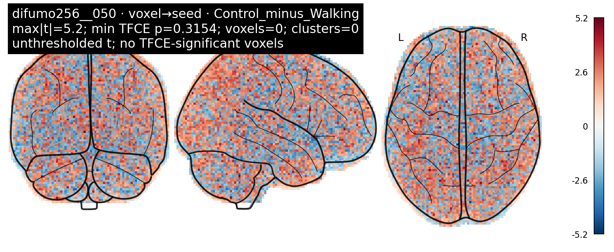
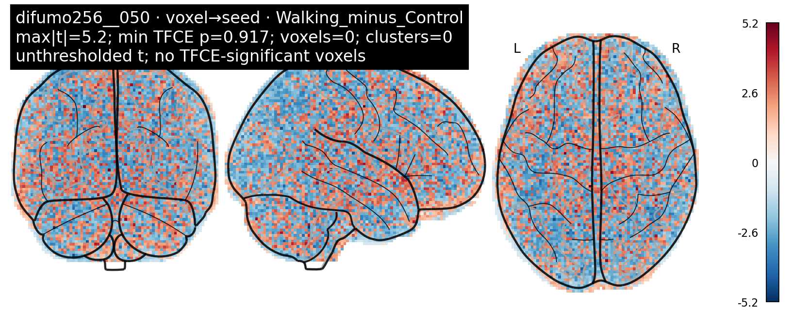
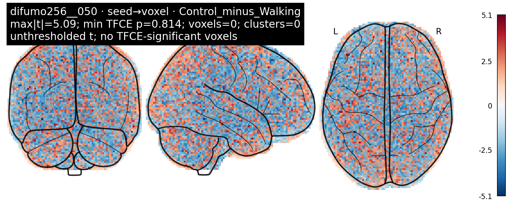
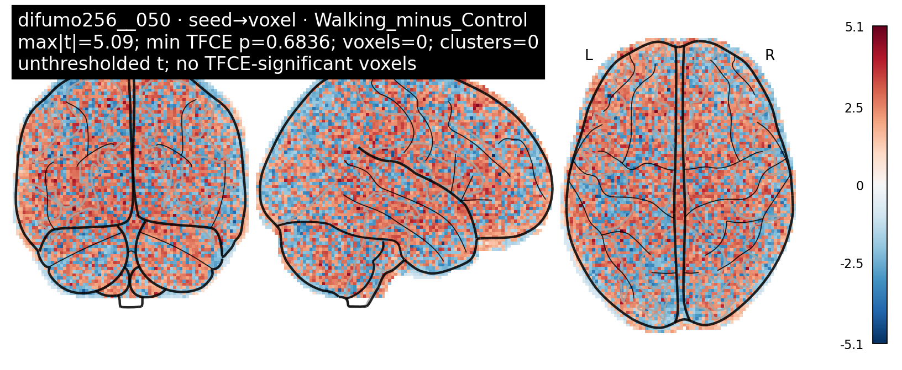

← Back to motor seed-to-voxel reportEC · difumo256
Each seed anatomy is shown before its result maps. Null maps are retained and labelled. TFCE is within-map correction only.
difumo256__050 · Cerebellum VIIIb posterior
difumo256 · label 50 · cerebellum

Seed anatomy before statistical maps
voxel→seed · Control_minus_Walking · max|t|=5.2 · min TFCE p=0.3154 · voxels=0 · clusters=0 · permutations=5000
voxel→seed · Walking_minus_Control · max|t|=5.2 · min TFCE p=0.917 · voxels=0 · clusters=0 · permutations=5000
seed→voxel · Control_minus_Walking · max|t|=5.09 · min TFCE p=0.814 · voxels=0 · clusters=0 · permutations=5000
seed→voxel · Walking_minus_Control · max|t|=5.09 · min TFCE p=0.6836 · voxels=0 · clusters=0 · permutations=5000